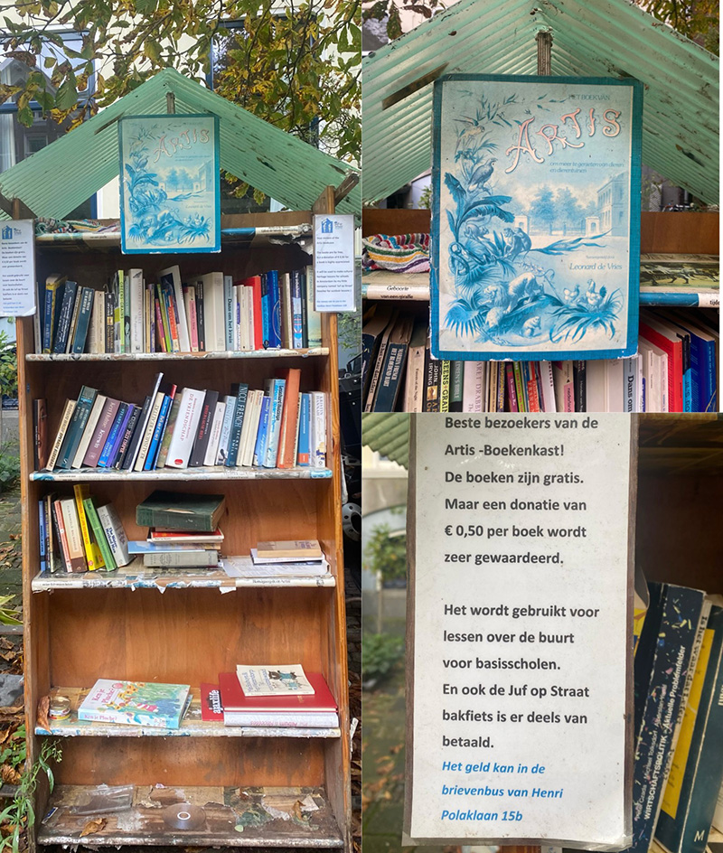

Verhalen
Het initiatief nemen om je eigen minibieb verdient naar mijn inzichten al een waardig applausje. Maar er zijn ook mensen die dit als een kans zien om een verzamelplek voor meerdere goede doelen te creëren naast het vergroenen van stad. Niet alleen zetten ze zich in voor de recycling van boeken en zwerfboeken, ook zamelen ze geld in voor verschillende goede doelen.
De artis boeken kast.
Deze boekenkast staat in de Henri Polaklaan en is opgericht door de eigenaar van huisnummer 15 b. Naast dat er boeken worden ingeleverd en uitgeleend/geruild word er gevraagd voor een donatie van 50 cent voor de onderneming juf op straat. Deze donaties worden vervolgens besteed aan voor gast lessen over de buurt voor basisscholen in deze omgeving. Een erg leuk en leerzaam initatief!
De help de ouderen boekenkast.
Ook deze boekenkast zet zich in voor andere initiatieven dan het ruilen van boeken. Naast dat je een boek kunt inleveren kun je ook je statiegeld flesjes en blikjes neerzetten. Deze worden vervolgens door de Astrid de eigenaresse ingeleverd bij de supermarkt, en met het verzamelde geld worden er pakketjes met iets leuks of lekkers voor de eenzame ouderen in de buurt gemaakt. Een mooi voorbeeld van dubbelop recyclen, en een mooie stap om vervuiling tegen te gaan.